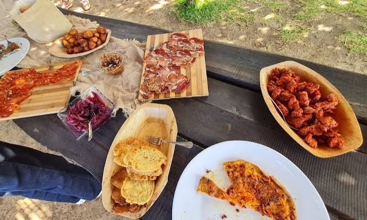

CityLoop Quest — Tropéa


La Cipolla Rossa di Tropea Calabria IGP est devenue l’emblème comestible de la côte. Sa douceur vient d’un ensemble de variétés, de sols, de climat et de savoir-faire plutôt que d’une magie contenue dans le seul nom de Tropéa. Elle se mange crue, confite, cuite au four ou transformée en marmelade.
La ’nduja de Spilinga prend la direction opposée : souple, rouge et très pimentée, elle réunit viande de porc et peperoncino. On l’étale sur du pain, on la fait fondre dans une sauce ou on l’ajoute avec parcimonie à une pizza. Le premier essai mérite une petite quantité ; la Calabre n’a jamais promis la timidité.
Les fileja sont des pâtes roulées autour d’une fine tige, dont la forme retient les sauces. Avec tomate, oignon, haricots ou ’nduja, elles composent un plat rustique et généreux. Leur texture irrégulière est précisément ce qui les rend agréables.
Le poisson joue naturellement un rôle important : espadon, thon, anchois et petits poissons bleus apparaissent grillés, marinés ou intégrés aux pâtes. Les aubergines, tomates séchées et fromages complètent une cuisine qui sait conserver les produits pour les mois moins abondants.
Pour terminer, le tartufo di Pizzo cache un cœur de chocolat fondu dans une boule de glace noisette et chocolat. Il est né à Pizzo au XXe siècle et mérite le détour. Son nom trompe les amateurs de champignons : ici, le seul sous-bois est celui du cacao.